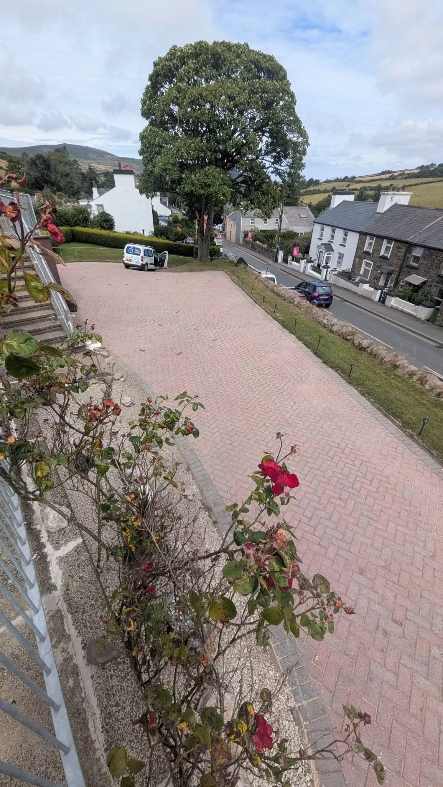
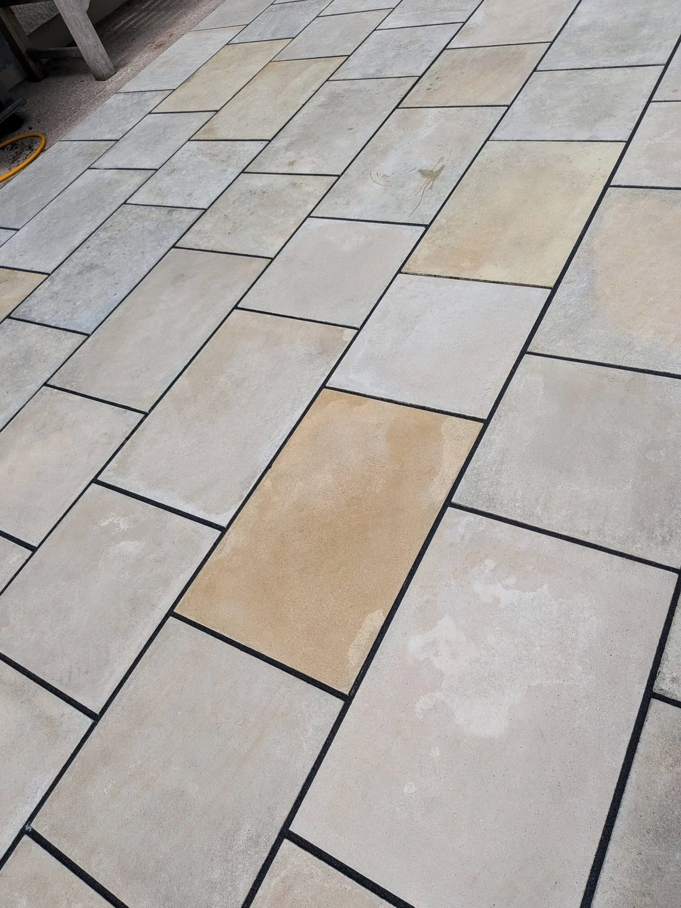
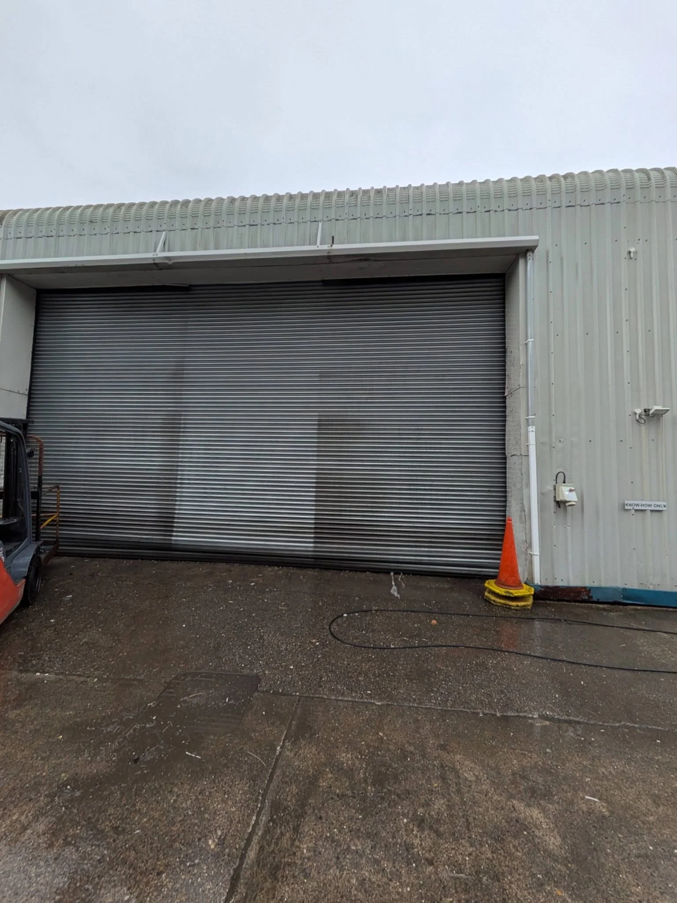

Driveway cleaningBlock paving & entrances
Patio cleaningStone & paved spaces
Roof cleaningMoss & surface growth
Roofline cleaningFascias, gutters & cladding
Commercial cleaningUnits & exterior surfaces
Re-sandingBlock-paving joint sand
A FRESH START OUTSIDE
Reveal the finish.
Weather, weeds and surface growth can change how your property looks. Manx Exterior Cleaning cleans driveways, patios and commercial exteriors across the Isle of Man.
From a sandstone seating area to the approach to your home, start with a free quote for the surfaces you want to improve.
Tell us about your space →

THE DETAILS MATTER
Fresh from the top.
These roofline photos show the same cladding, fascia and guttering before and after cleaning. A closer look at the details makes the change clear.
Roofline cleaning →BEFORE & AFTER
Results, side by side.
Matching views from recent cleaning projects. Tap either photo to see the full original view.
Patio refresh
Weeds and surface growth removed to reveal the colours of the paving.
A clearer approach
The same sloping driveway before and after cleaning, with the original block pattern revealed.
Roof clean
Two views of a roof-cleaning project, showing mossy tiles and the cleaned finish.
PAVING TRANSFORMATIONS
Back in view.
From courtyard paving to the driveway outside your home, see how cleaning reveals the original surface. Each comparison shows both stages together.
Explore driveway cleaning →
MANX EXTERIOR CLEANING
Across the island.
Exterior cleaning for homes and commercial properties on the Isle of Man. Get in touch to discuss the surfaces, access and finish you need.
01
Free quotes
Send photos and your location to start the conversation.
02
Available 7 days
Ask about a suitable day for your cleaning project.
03
Commercial cleaning →Homes & businesses
Driveways, patios, re-sanding and commercial cleaning.
FACEBOOK RECOMMENDATIONS
100% recommendBased on 9 reviews on Facebook.
Visit our Facebook page →FREE QUOTE
What needs cleaning?
Choose a service and tell us about the job. This form opens WhatsApp with your details ready to send. You can add photos in the chat.
Free quotes island wide. Include your town or postcode, the surface and an idea of the area.
Call 07624 489080
manxexteriorcleaning@gmail.com
Your details are only shared when you send the message. Privacy information.
GOOD TO KNOW
A few answers.
Where do you work?
Manx Exterior Cleaning offers free quotes island wide on the Isle of Man. Include your town or postcode when you enquire.
What do you clean?
Driveways, patios, rooflines and commercial exteriors, with re-sanding also available. The portfolio includes roof, cladding and paving projects. Ask about your particular surface.
How do I get a quote?
Call, email or use the WhatsApp form. Photos, approximate measurements, your location and access details help explain the work.
Can you re-sand block paving?
Re-sanding is offered for block paving. Include it in your enquiry so cleaning and joint-sand requirements can be discussed together.
Are you available at weekends?
Manx Exterior Cleaning is available seven days a week. Contact Manx to agree a suitable date.
Will pressure washing suit every surface?
Different materials and conditions need different approaches. Share close-up photos, the material and any known damage so the job can be assessed before work is agreed.
Do you clean commercial properties?
Yes. Commercial cleaning is offered. Share details of the building, surfaces, access and any site requirements when requesting a quote.
MANX EXTERIOR CLEANING
Ready for a refresh?
Free quotes island wide · Available 7 days a week
manxexteriorcleaning@gmail.com